[ name ] mustafa
[ description ] yet another random / ordinary dev (junior)
[ statement ] i do respect powerful programming languages
[ believe / opinion ]
i do prefer clarity over simplicity
[ believe / opinion ]
simplicity in itself is a powerful framework so you can use it and take advantage of
[ believe / opinion ]
i do like java boilerplate
[ believe / opinion ]
if go provides simplicity, java provides clarity with its boilerplate code, java code is clear
and is not complex to understand despite its boilerplate nature, thus i value java over go
[ believe / opinion ]
every framework is built upon a certain conviction, choosing a framework isn't
a neutral act it's an ideological act. You're not just picking what's convenient; you're aligning
yourself with a set of beliefs about how things should be done
[ information ] definition of a powerful programming language
there are several elements that may govern the definition of a powerful programming language, a powerful programming language is language with:
- a massive popularity
- a massive ecosystem and massive amount of packages
[ information ] powerful programming languages


[ about ] favorite programming languages


[ about ] admired / respected programming languages


[ about ] favorite frameworks
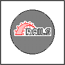
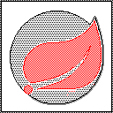
[ about ] favorite web stack
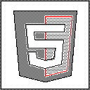
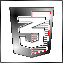
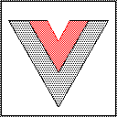
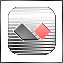
[ about ] favorite PaaS / self hosted PaaS
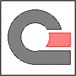
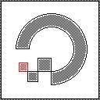
[ about ] favorite IDE / text editor
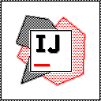
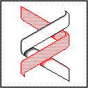
[ about ] favorite operating system
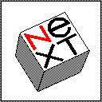
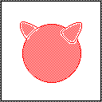
[ about ] favorite game engine


[ about ] favorite database